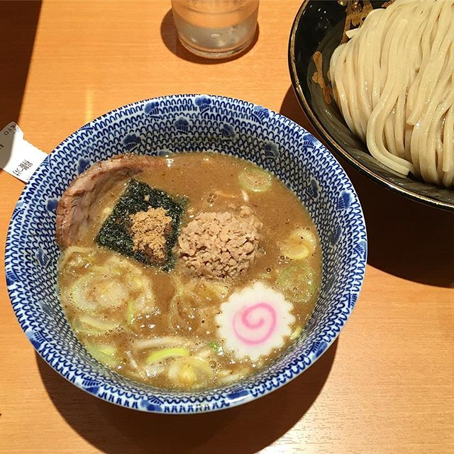

<div id="carousel-example-generic" class="carousel slide" data-ride="carousel">
  <!-- Indicators -->
  <ol class="carousel-indicators">
    <li data-target="#carousel-example-generic" data-slide-to="0" class="active"></li>
    <li data-target="#carousel-example-generic" data-slide-to="1"></li>
    <li data-target="#carousel-example-generic" data-slide-to="2"></li>
  </ol>

  <!-- Wrapper for slides -->
  <div class="carousel-inner" role="listbox">
    <div class="item active">
      
      <div class="carousel-caption">
        ...
      </div>
    </div>
    <div class="item">
      
      <div class="carousel-caption">
        ...
      </div>
    </div>
    ...
  </div>
</div>

=============================================
Alexandra Ereiro no Paysandu Esporte Clube e a marca Lobo.
By Denis Sarmanho - 30 30UTC julho 30UTC 2016
Share on Facebook Tweet on Twitter

Alexandra Ereiro no Paysandu Esporte Clube e a marca Lobo.

A atleta participa neste fim de semana do Bodyboard Atack, evento que vale pontos para o Ranking paulista. A 1º etapa vai ser nos dias 21 e 22 de Agosto em Guarujá – SP

O Papão fechou uma parceria com a atleta Alexandra Ereiro que irá levar o nome e as cores do maior do norte nos campeonatos que for disputar. Alexandra irá representar o Paysandu no Bodyboard Attack Contest que será disputado em Praia Grande/SP. Em setembro a atleta levará o nome do clube para Portugal, onde irá disputar a terceira e quarta etapa do circuito mundial.

Sobre a parceria com o clube bicolor, a atleta disse estar muito feliz. “Estou muito feliz com essa parceria que está fechada como Paysandu, que vem para somar comigo e me ajudar a participar das competições”, disse.

“Bodyboard é um esporte praticado na superfície das ondas do mar em que o surfista usa sua prancha de bodyboard para deslizar pela crista de uma onda em direção à areia”.

Texto e Foto Fernando Torres

===================================================================

Xandinha não compete o Mundial, mas briga pelo título paulista

Este ano consegui com muito esforço e dedicação participar da primeira etapa do Circuito Mundial de Bodyboard que aconteceu no Brasil, em Itacoatiara, Niterói RJ.  Campeonato de alto nível técnico e competitivo, que me fez crescer bastante como atleta, e obter uma grande e ótima experiência, porém, é com imensa tristeza que vos comunico que não vou poder participar das outras provas do Circuito Mundial de Bodyboard deste ano como previsto, competições essas de suma importância para minha evolução no esporte.

Estou passando por uma fase maravilhosa como atleta, mas dependo do patrocínio oficial do estado do Pará, através da Seel, para participar de provas deste nível. Mas eles tem seus compromissos e eu entendo completamente, respeito e aceito.

Agora o meu foco é competir no restante das provas do Circuito Paulista 2016, no qual estou na briga pelo título da categoria ‘open’, e me preparar para o tour Mundial em 2017. Obrigado a todos os amigos e a minha família pela torcida e pela força na minha carreira.

Agradecimentos aos meus queridos co- patrocínios: Seel /Bela Rosa /Luxo de Sereia /Refresh Boards /Kpaloa /Amazon Power /Sou Crossfit /site Craud.net

Foto de capa: Cristiano Cantão

Por: Alexandra Ereiro/ Craud.net

=====================================================

Mormaii Parque Shopping Belém e Xandinha promovem ‘descontão’

Você quer um descontão na loja Mormaii Parque Shopping?

Então se liga no que a Loja da Mormaii do Parque Shopping Belém esta oferecendo para vocês!


Basta enviar uma mensagem para o facebook.com/alexandra.ereiro por inbox e curtir a página “Xandinha Ereiro” que eu darei um ‘cartão-desconto’ com a minha assinatura valendo 10% de desconto  na compra de três peças Mormaii.

‘10% de desconto na compra de  roupas e os acessórios iradíssimos da Mormaii’

Lembrando que, só vale o cartão da Mormaii Parque Shopping com a minha assinatura e comprando á partir de três peças você ganha o descontão .

‘mas vá correndo, porque os cartões são limitados’

 Esta promoção é um presente da Mormaii Parque Shopping Belém e da Alexandra Ereiro para vocês.

Alexandra Ereiro é atleta: Mormaii Parque Shopping Belém/ Seel/ Craud.net/ Refresh Boards/ Bela Rosa/ Luxo de Sereia/ Amazon Power/ Sou Crossfit/ Kpaloa

Por Alexandra ‘xandinha’ Ereiro

================================================================

A temporada começou

Meu mar de água doce 2016

A temporada começou

Estive sábado,  27 de agosto, para fazer um ‘bate e volta’ com alguns amigos que também são ‘bodyboarders’. Surfamos primeiro na praia do Cachimbo, e no finalzinho da tarde na praia Farol.  Fomos beneficiados nos dois picos por ventos favoráveis, que proporcionou uma boa vala.

‘Época para a alegria dos surfistas de todo o estado do Pará’

Uma dica para todos: Importante também cuidar da saúde, e mantermos o nosso corpo muito bem nutrido e protegido, para que os treinos sejam bem aproveitados. Recomendo frutas, verduras e legumes… e um bom protetor solar.

É isso, em breve volto aqui com uma galeria de fotos e mais uma pequena dica de sáude.

==================================================================

Pé na Estrada

Não poderia começar melhor o mês, acordando às seis da manhã para pegar a estrada e rodar os 70 km que separam a cidade de Belém,  da ilha do Mosqueiro. Eu e meus amigos tomamos o café da manhã dentro do carro, para não perder o horário da ‘maré alta’. Todo o esforço  é válido para aproveitarmos melhor a época das ondas’ no meu mar de água doce’.
A relação de respeito e amor com esse lugar não tem igual.  Proporciona essa fantástica manifestação da natureza. A   muita emoção, e a vontade  é grande de mostrar para o mundo todo o que temos de tão lindo e inédito no norte do Brasil.
A natureza aqui é um verdadeiro paraíso, e se apresenta com uma exuberância ímpar, onde a palavra lindo, resume tudo que se pode dizer.
Para a galera que curte pegar umas ondas, recomendo as praias do Farol e do Marahú, e os picos:  Manduca, Cachimbo e Paisandu”, onde as ondas podem alcançar até 1,5 m de altura nos melhores dias, chegando a produzir tubos com uma perfeita formação. Vale a pena conhecer.

Fotos: Fabrício Maduca
Por: Alexandra Ereiro
Atleta: Seel / Refresh Boards / Shaper Gato / Mormaii Parque Shopping Belém / Soleggiato / Luxo de Sereia / Bela Rosa / Kpaloa / Fini / Craud.net / Sou Crossfit / Amazon Power.

=========================================================

Xandinha no Mundial

Xandinha no Mundial
Oi, meus amigos do Craud!
Estive recentemente na praia de Itacoatiara,  em Niterói, no Rio de Janeiro,  precisamente entre os dias 16 e 26 de Junho, onde foi o cenário da terceira etapa do Circuito Mundial de Bodyboard, o Itacoatiara Pro, sendo esta a  primeira etapa do Circuito Mundial Feminino Pro, no qual eu estive participando e representando meu país, e o nosso estado do Pará.

A competição reuniu os melhores atletas do planeta

Estar entre as melhores do mundo é muito bom, venho sonhando e lutando desde a primeira vez que subi em um pódio para participar do mundial. Infelizmente não me dei bem, mais estou focada para a terceira  etapa que será em Portugal.Quero melhorar meus treinos, para depois sonhar com a possibilidade de um bom resultado.

Esse circuito tem um peso muito grande em minha carreira, pois é meu primeiro Tour Mundial.

Quero agradecer aos meus Patrocinadores que me deram todo o suporte para competir nesta etapa tão importante, obrigada a Seel e ao Paysandu Esporte Clube e Lobo, pelo grande patrocínio.
Obrigada aos meus apoios: Refresh Boards / Luxo de Sereia / Bela Rosa / Sou Crossfit / Amazon Power / site Craud.net / Kpaloa.
Aloha!
Por Alexandra Ereiro
Fotos: Arquivo pessoal

========================================================

Projeto​ Bodyboard Pará finaliza 2016 em harmonia com o esporte

Para fechar o ano de 2016 em harmonia com as energias positivas do esporte, o Projeto​ Bodyboard Pará reuniu as crianças que fazem parte do projeto para um confraternização em meio a aulas teóricas e práticas sobre o esporte

As crianças vivenciaram  um momento de oração e agradecimento ao aniversariante do mês, Jesus Cristo,  e em seguida realizaram um amigo invisível e outras brincadeiras.

Ouve também o lanche coletivo e depois com o objetivo de fortalecer os laços de amizade e de equipe, trabalhamos a importância do amor, respeito ao próximo, verdade, Justiça, e prontidão. O momento foi agradável e de muita alegria, era visível a alegria das crianças nas trocas de presentes entre todos.

Foram realizadas avaliações psicopedagógicas individuais com algumas crianças, com o objetivo de detectar possíveis dificuldades de aprendizagem escolar pela profissional Ana Claúdia,  formada em Psicopedagogia e bodyboarder que faz parte do projeto. .

Depois foi a vez das crianças irem para água  e realizarem as aulas práticas comigo. A felicidade foi grande, pois este é o momento mais esperado pelas crianças. Os alunos tiveram a oportunidade de conversar e tirar dúvidas, onde eu expliquei sobre os fundamentos básicos do Bodyboard, e da importância sobre a boa conservação dos equipamentos, reforçando dicas sobre os cuidados e a manutenção que se deve ter com a prancha de Bodyboard.

Agradecimentos especiais aos voluntários Adriana Nascimento, Leonardo e Darcley Gouveia.

Fotos: Darcley Gouveia (Praia do Atalaia, Salinópolis Pa)

Meus apoios como competidora: Seel/ Refresh Boards/ Shaper Gato/ Fini/ Kpaloa/ SunFlower/ Amazon Power/ Craud.net/ Sou Crossfit

Por Alexandra ‘xandinha’ Ereiro/ Coluna da Xandinha/ Craud.net

================================================

Posts em Destaque:
.projeto xandinha -done
.circuito paulista -done
.refresh boards -done
.2 etapa do circuito catarinense -done
.podio no guaruja
fernando de noronha
poroca do capim
